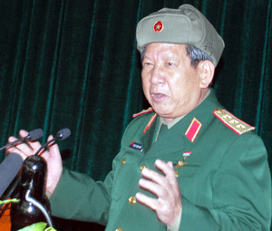

Lời Tựa

âu chuyện của Trung tá Thủy quân Lục chiến - James G. Zumwalt - con trai Đô đốc chỉ huy trưởng lực lượng Hải quân Mỹ tại Việt Nam.
James G. Zumwalt – Xuất thân trong một gia đình có truyền thống binh nghiệp, cựu Trung tá Thủy quân Lục chiến James Zumwalt từng chiến đấu tại Việt Nam, tham gia cuộc can thiệp quân sự của Mỹ Panama năm 1989 và Chiến dịch Bão táp Sa mạc tại vùng Vịnh, Iraq năm 1990 – 1991.
Ông là con trai của Đô đốc Elmo Russell Zumwalt, Jr., Tư lệnh Hải quân Mỹ đặc trách lực lượng duyên hải và đường sông thời Chiến tranh Việt Nam. Tư lệnh Elmo Zumwalt, sau này là Tham mưu trưởng Hải quân Mỹ, chính là người đã phát động chiến dịch rải chất độc hóa học tại Việt Nam trong suốt một giai đoạn rất dài của cuộc chiến, để lại nhiều di họa cho đất nước Việt Nam cũng như nước Mỹ và chính gia đình ông.
Sau quãng đời binh nghiệp, ông James Zumwalt trở thành một diễn giả, tác giả của hàng loạt bài viết về quân sự và chính sách đối ngoại trên các báo và tạp chí nổi tiếng của Mỹ như USA Today, The Washington Post, The New York Times, The Washington Times, The LA Times, The Chicago Tribune, The San Diego Union, Parade…
Ông hiện là chủ tịch công ty tư vấn an ninh mang tên cha mình – Admiral Zumwalt & Consultants, Inc.
James Zumwalt viết BARE FEET, IRON WILL (CHÂN TRẦN, CHÍ THÉP) sau những chuyến trở lại Việt Nam, gặp, phỏng vấn và trò chuyện thẳng thắn với những người từng đứng bên kia chiến tuyến. Cuốn sách xuất bản ở Mỹ vào ngày 26/4/2010 đã tạo ra tiếng vang lớn và thu hút sự quan tâm đặc biệt của dư luận Mỹ.
Cuốn sách này dành tặng:
-----------------------
Anh trai tôi, Elmo, người đã xung phong sang Việt Nam với tinh thần trách nhiệm, danh dự và xả thân, để rồi phải mất sớm vì chính những mầm độc từ cuộc chiến ấy.
-----------------------
- 58.000 người Mỹ đã bỏ mình trong cuộc chiến tranh Việt Nam.
- Gần một triệu chiến binh Bắc Việt và Việt Cộng, những người đã chiến đấu vì một nước Việt Nam thống nhất, đã trải qua bao gian khó, khổ đau, bi kịch và hy sinh trong hành trình đến chiến thắng cuối cùng.
- 254.000 quân nhân miền Nam Việt Nam đã chiến đấu bên cạnh người Mỹ.
- Khoảng hai triệu công dân Việt Nam, những người tham chiến hoặc là nạn nhân của cuộc chiến tại Việt Nam, đã chấp nhận trả giá với niệm hy vọng một ngày mai các thế hệ con cháu có thể sống tự do, sau những đau khổ của cha ông.
- Con gái Thea, với một tình yêu bất tận đã mang đến cho đời tôi niềm vui và niềm hạnh phúc tuyệt vời, mà ngay chính con cũng không nhận ra.
- Con trai James, người đã tiếp nối truyền thống gia đình về trách nhiệm, danh dự và hy sinh cho đất nước, bất chấp nguy nan, đã mạo hiểm cả cuộc sống và một phần thân thể của mình để cứu người khi làm nhiệm vụ vô hiệu hóa vật nổ trên chiến trường trong thời đại mới.
- Vợ tôi, Karin, người đã cho tôi biết ý nghĩa về sức mạnh của tình yêu và tiến trình hàn gắn, người vẫn còn đang tiếp thêm cho tôi nghị lực.
- Mẹ tôi, người đã chịu đựng sự khắc nghiệt của chiến tranh trong những thập niên đầu đời khi mất đi thân phụ và về sau còn mất đi một đứa con trai vì chiến tranh.
- Cha tôi, người với tấm gương chân thực của chính mình đã dạy cho tôi về bổn phận, danh dự và tinh thần hy sinh cho Tổ quốc.
“Một số ý kiến của chính quyền Mỹ cho rằng nếu tiến hành cuộc chiến tranh ở Việt Nam một cách hợp lý, không có áp lực chính trị, thì người Mỹ đã chiến thắng. Trước khi trở lại Việt Nam vào năm 1994, tôi cũng nghĩ như vậy. Nhưng giờ đây tôi đã nghĩ khác. Chuyển biến trong tôi chỉ diễn ra sau khi tôi thấu hiểu được rằng người Việt Nam có một ý chí sắt đá để có thể chiến đấu đến chừng nào đạt được mục tiêu thống nhất đất nước mới thôi.
Không nơi nào mà quyết tâm được thể hiện rõ như thái độ những người sống và chiến đấu dọc Đường mòn Hồ Chí Minh và địa đạo Củ Chi. Hiểu được quyết tâm duy trì Đường mòn cũng như bám trụ tại địa đạo Củ Chi chính là hiểu được “chí thép” của họ.
Đó chính là ý chí thép đặc trưng và rất đặc biệt của người Việt Nam, vốn đã thôi thúc họ tiến lên để giành chiến thắng trong cuộc chiến trước người Mỹ - cuộc chiến mà nước Mỹ thiếu một quyết tâm tương xứng.”
James G. Zumwalt
LỜI TỰA CỦA THƯỢNG TƯỚNG PHAN TRUNG KIÊN

Tôi đang cầm trên tay cuốn sách đặc biệt về cuộc chiến chống Mỹ thần kỳ của dân tộc. Nó đặc biệt vì chính tựa sách Chân trần Chí thép được đặt bởi một Trung tá Thủy quân Lục chiến Mỹ - Nay trở thành một người bạn thân thiết trong quá trình hòa giải và hàn gắn những nỗi đau thời hậu chiến, thúc đẩy quá trình thấu hiểu, hợp tác và hàn gắn vết thương chiến tranh giữa Việt Nam và Hoa Kỳ.Tác giả cuốn sách James G. Zumwalt là con trai của Zumwalt Tư lệnh Hải quân Mỹ - Chỉ huy trưởng lực lượng Hải quân Mỹ, là người đã ra lệnh rải chất độc da cam tại Việt Nam và chính con trai đầu của ông đã chết vì chất độc da cam.
Đọc cuốn sách tôi có cảm nhận như sống lại thời chiến tranh chống Mỹ hào hùng của dân tộc. Những chi tiết quý báu, tư liệu phong phú, và nhận xét độc đáo của tác giả qua gần 200 cuộc phỏng vấn tại Việt Nam đã cho người đọc những câu chuyện sống động về ý chí kiên cường của thế hệ cha anh đã quyết lòng hy sinh vì độc lập tự do cho dân tộc.
Tôi khâm phục sự trung thực và dũng cảm của tác giả khi bộc lộ những cái nhìn khác biệt với quan điểm thù hận thời tuổi trẻ của ông, và ở chính quyền Mỹ hồi đó. Thật không dễ để viết một cuốn sách thẳng thắn và sâu sắc như vậy. Tác giả đã cảm nhận ngoài ý chí kiên cường trong chiến đấu, Việt Nam là một dân tộc yêu chuộng hòa bình và mong muốn làm bạn với tất cả các dân tộc khác. Tôi tin rằng sẽ còn nhiều cuốn sách và tấm lòng từ những cựu chiến binh khác, vì quan hệ giữa Việt Nam và Hoa Kỳ đã và đang thực sự trải nghiệm qua một giai đoạn mới.
Công ty First New – Trí Việt đã kịp thời dịch cuốn sách này sang tiếng Việt, kỉ niệm ngày Giải phóng miền Nam để các thế hệ Việt Nam hôm nay hiểu rõ hơn sự anh dũng sáng tạo và ý chí sắt thép vô song đã làm nên chiến thắng của dân tộc. Tôi tin rằng ý chí kiên cường ấy sẽ vận động tích cực đưa đất nước chúng ta tiến lên mạnh mẽ trong thời đại ngày nay và tương lai.
Hà Nội, ngày 30 tháng 3 năm 2011
Thượng tướng Phan Trung Kiên
Thứ trưởng Bộ Quốc phòng CHXHCNVN
Anh hùng LLVTND
CUỐN SÁCH CỦA SỰ THỰC VÀ CHÍNH TRỰC
Tôi thật xúc động khi đọc CHÂN TRẦN, CHÍ THÉP vì tôi cảm nhận cuốn sách thực sự được viết bằng cả trái tim và lòng khát khao đi tìm chân lý và sự thật của tác giả - Trung tá Thủy quân Lục chiến James G. Zumwalt, người đã trực tiếp tham chiến ở chiến trường Việt Nam và người anh trai là Trung úy Elmo đã chết vì nhiễm chất độc da cam do chính cha mình – Tư lệnh Hải quân Mỹ Zumwalt đã ra lệnh rải chất độc khai hoang xuống chiến trường Việt Nam. Cũng như quyển Không Thể Chuộc Lỗi của Allen Hassan, thật hiếm khi đọc được cuốn sách hay và sống động như thế này do một cựu chiến binh Mỹ viết.
Cuốn sách cung cấp cho chúng ta một cái nhìn khác qua lăng kính của một người ở bên kia chiến tuyến về những con người Việt Nam CHÂN TRẦN, CHÍ THÉP, qua đó giúp bạn đọc hiểu thêm về ý chí kiên cường, tính mưu trí sáng tạo của thế hệ cha anh chúng ta trong cuộc chiến tranh giành độc lập. Mỗi trang sách đều toát lên tính nhân bản sâu sắc, tình thương yêu và sự cảm thông giữa con người với con người – cao hơn mọi định kiến, thù hằn.
Tôi cảm ơn và trân trọng tình cảm mà tác giả dành cho mảnh đất và con người Việt Nam như một nỗ lực dứt bỏ nỗi ám ảnh của cuộc chiến tranh Việt Nam, nơi tác giả đã trực tiếp tham chiến và chứng kiến những vết thương mà cuộc chiến khốc liệt gây ra đã in hằn trong lịch sử cả hai dân tộc.
Đây thật sự là một cuốn sách có giá trị và đáng đọc – để thấu hiểu thêm một thời máu lửa hào hùng của dân tộc – và chúng ta không được quên – về sự tàn ác của chiến tranh, và cái giá phải trả để giờ đây chúng ta có được những năm tháng của ngày hôm nay.
Trung tướng Lê Thành Tâm
Chủ tịch Hội Cựu chiến binh Thành phố Hồ Chí Minh